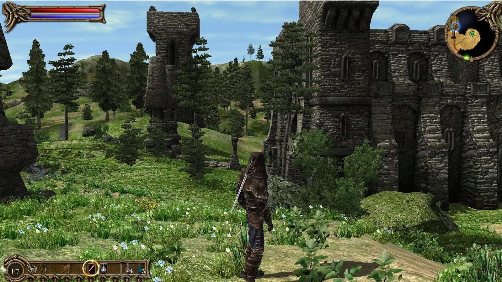
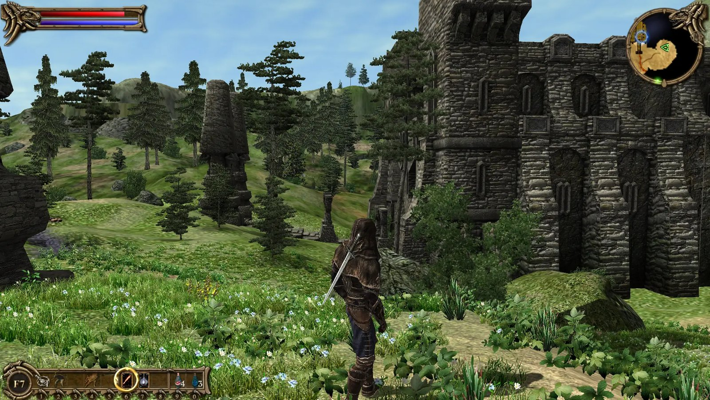

Before / after
Same spot, same view — only the set.txt differs. Watch the hills in the background on the left: with the tuned values far more trees and vegetation get drawn instead of being clipped away.


Drag to compare — default on the left, tuned on the right.
Where the file goes — and how to load it
Save the file as set.txt in your game folder (where TwoWorlds.exe lives). If a set.txt already exists, replace its contents or append the lines.
Important: the game does not read the file automatically on startup. You load it in-game from the console: open it with ^ (the key left of the 1), then enter:
@set.txt
The @ tells the game to run the file as a list of console commands — the values take effect immediately. You need to enter @set.txt again after every restart.
Engine.FarPlane and Engine.DLandFarClipp — they control raw view distance. Higher = further, but it costs performance. If you get stutters, lower these two first.The complete file
Engine.AlphaFadeNear 1500 Engine.AlphaFadeFar 3000 Engine.DLandAFade 1500 Engine.DLandFarClipp 7000 Engine.DLandFarClippOBJ 7000 Engine.DLandFogFarScale 120000 Engine.FarPlane 2500 Engine.LOD0 3200 Engine.LOD1 6400 Engine.LODblend 1066 Engine.SFarRng 1600 Engine.GFadeNear 1400 Engine.GFadeFar 1600 Engine.GrassDisp 28 Engine.GrassQ 0.4 Engine.GrassRandomizer 0 Engine.AutoDOFTolerance 0.6
What the values do
| Line | Effect |
|---|---|
FarPlane | Maximum camera view distance — the single biggest effect on the visible horizon. |
DLandFarClipp / OBJ | How far terrain and the objects placed on it get drawn. |
LOD0 / LOD1 | Distance at which models drop to coarser detail levels. Higher = crisp for longer. |
AlphaFadeNear / Far | Fade-in distance for objects so they don't pop in harshly. |
GFadeNear / Far, GrassDisp, GrassQ | Range, density and quality of the grass. |
DLandFogFarScale | Pushes the fog back so your new view distance doesn't vanish into haze. |
AutoDOFTolerance | Fine-tuning for the automatic depth of field. |
Getting stutters?
Draw distance costs performance. Dial back in this order: first FarPlane (try 1800), then DLandFarClipp/DLandFarClippOBJ (try 5000), and GrassDisp last. Every value is free to tweak — it's a plain text file.